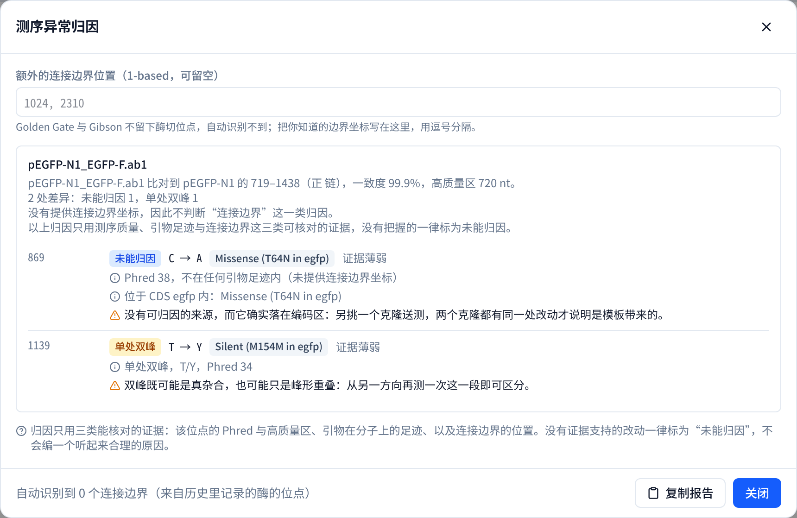
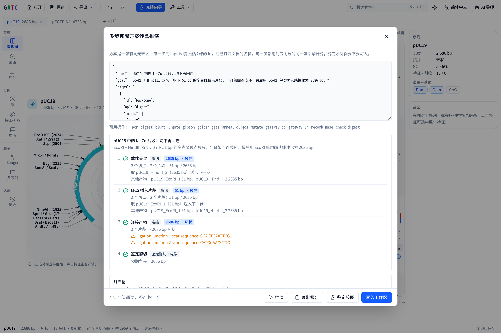

GATC
第三阶段：方案推演与测序归因
截图为真实运行结果，数据为内置的 pUC19 与 pEGFP-N1
A多步克隆方案的沙盒推演
EcoRI + HindIII 双切 pUC19，取 51 bp 的多克隆位点片段与 2,635 bp 骨架回连成环，
再以 EcoRI 单切验证。四步全部通过，连接处的疤痕序列逐一列出。

B测序异常归因
pEGFP-N1 的 Sanger 读长比对一致度 99.9%，两处差异分别判为「未能归因」与「单处双峰」，
并给出所依据的 Phred 值与引物足迹判断，以及下一步该做什么。

architektspeer.github.io/GATCGPL-3.0498 项单元测试 · 浏览器走查 40/40
多步克隆方案的沙盒推演与
测序异常归因
把一条克隆路线写成有向无环图，在浏览器内逐步算完再决定是否写入； 读长与质粒不符时，只按可核对的证据归因。
SnapGene 是 Dotmatics 的商标；GATC 为独立项目，与其无关联。
